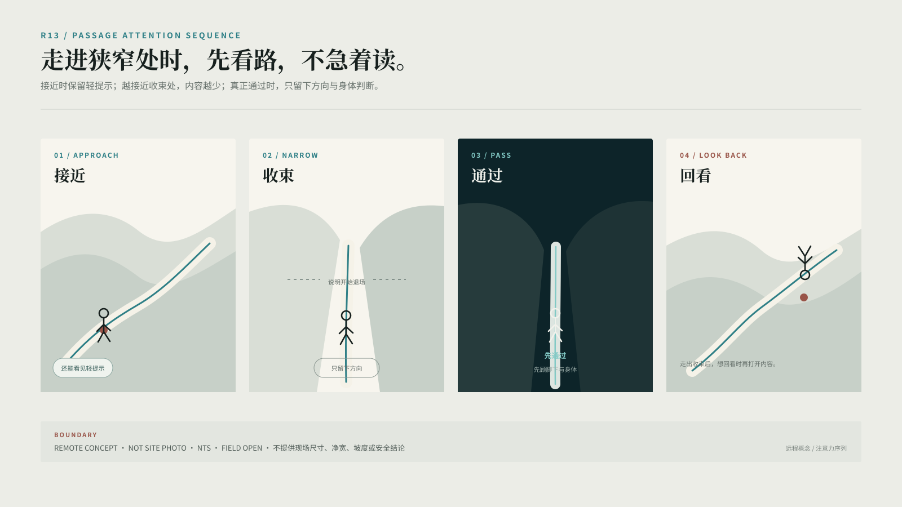
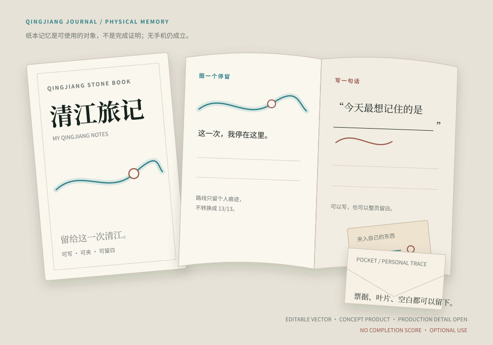
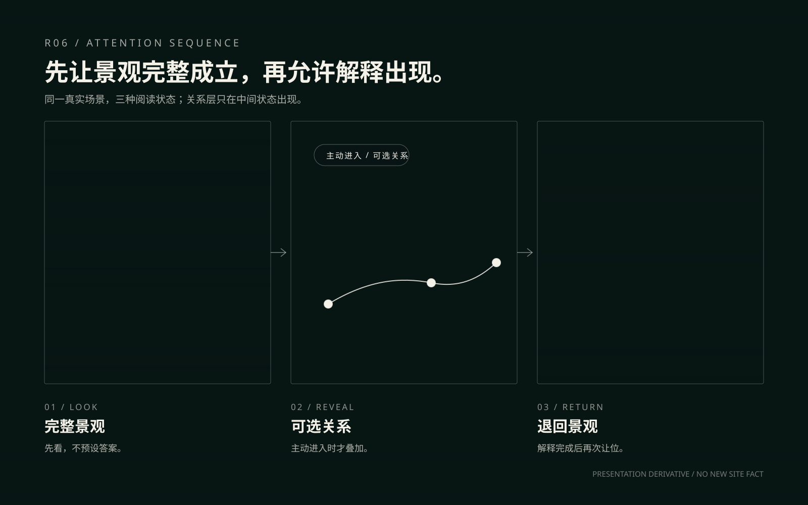
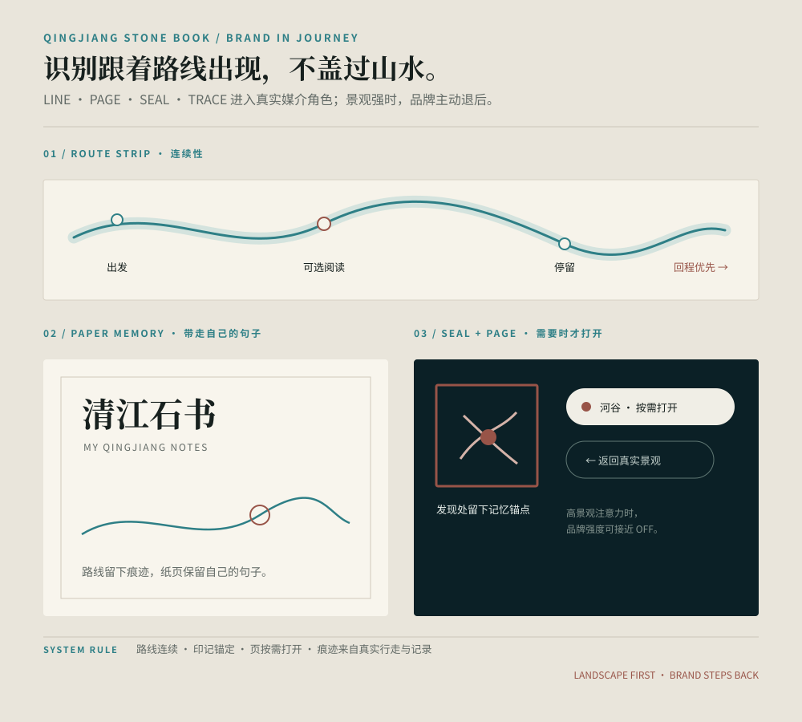
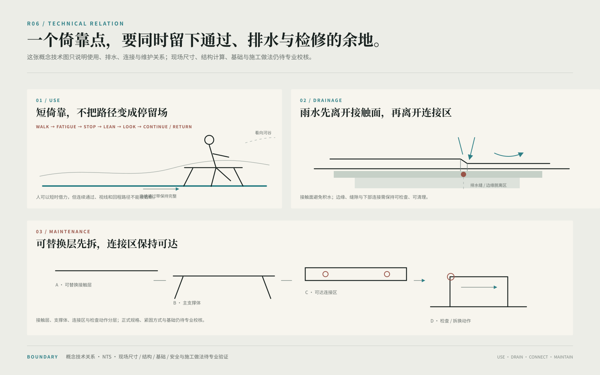

水上看
从江面内部建立连续山水、两岸和峰林的整体尺度。

QINGJIANG STONE BOOK · EXPERIENCE DESIGN
水上看，空中看，山中走；需要时，再打开一页清江。
研究级设计展示｜真实场地与来源优先｜远程研究不等同现场测量或施工结论
QINGJIANG / ROUTE / EXISTING WORK
山水、游船、跨江索道、步行网络和回程共同构成一次真实游程。设计不重新发明景区，而是在既有移动和观看关系里找到介入的位置。




ROUTE / ATTENTION / RETURN
水上、空中、山中拥有不同速度和注意力。设计因此不再追求“内容更多”，而是判断什么时候看、什么时候读、什么时候只需要继续走。
WATER / AIR / BODY
游船建立河谷整体，索道建立两岸关系，步行把宏观山水转换为身体尺度。交通本身就是体验的空间结构，而不是三个彼此独立的节目。
从江面内部建立连续山水、两岸和峰林的整体尺度。
视点抬升后，同时读到江、两岸、峰林与跨江关系。
速度下降以后，路线分支、身体压力、停留和恢复进入设计尺度。

LANDSCAPE / ATTENTION
完整景观先成立。游客形成自己的观察之后，关系线索才短暂出现；解释完成，再把视觉主权还给同一片河谷。
OPTIONAL READING / THIRTEEN IMPRINTS
路线负责怎么游，十三印负责沿途可能看见什么。任何一印都可以进入、跳过、改序或关闭；少读几页仍然是完整旅行。
当前选择只是一次个人阅读组合，不代表完成率；任何部分组合都成立。
DIGITAL COMPANION / GAME MAP
数字系统帮助定向、发现、记录与回程，然后在真实景观更强时主动退场。纸图、标识和人工服务始终构成并行路径。
先判断怎么游，而不是还有多少任务。
当前位置、真实路线和 Return 最明显；内容只是轻提示。
场景 → 提示 → 关系 → 深读 → 退出。
留下路线、停留、照片和一句话。
APP OFF / JOURNEY STILL WORKS.
OPEN / NARROW / DIFFERENT ATTENTION
开阔停留与空间收束拥有相反的注意力条件，因此设计强度也必须相反。
景观先行 → 身体恢复 → 可选比较 → 短暂关系揭示 → 再看同一片河谷。
内容容量 ↑接近时减弱内容 → 进入后只保留方向 → 通过时阅读与游戏关闭 → 退出后再回望。该序列只说明体验逻辑，不作为现场照片或测量证据。
身体与回程 ↑PHYSICAL / BODY NEED
先比较“不介入是否已经足够”。只有真实身体需求增加时，设计才从停留条件进入身体支持，再决定是否值得继续发展为具体对象。

真实景观与既有路径已经足够。
短暂停靠、短恢复，然后继续走。
只有身体需求持续增加时才继续设计。
更长停留必须同时证明位置、路径和维护必要性。

BRAND / APPLICATION
线、印、页与痕迹被落实到地图条带、纸本、页签和保存动作。品牌强度可以随场景下降：高景观、高身体注意时，识别只留下必要痕迹。
LANDSCAPE FIRST.

TECHNICAL PROOF / R06
景观与体验先成立，技术证明随后检查使用关系、积水风险、边缘处理、连接可达与维护动作。当前只画能够诚实说明的概念关系，不把尚未确定的结构规格、基础或现场尺寸写成事实。
概念深化 / NTS｜现场尺寸、结构、基础、安全与施工做法待后续专业验证
PAPER MEMORY / AFTER THE JOURNEY
纸本与数字记录不统计“完成了多少印”。它们只保存真实发生的路线、停留、照片、一句话和空白，让一次没有完成任务压力的旅行仍然可以被重新翻开。
圈住真正停过的地方，不补齐没走过的部分。
给记忆一个很轻的入口，而不是填写标准答案。
没有记录也不影响旅行完整。
手机关闭以后，记忆路径仍然存在。
PARTIAL IS COMPLETE.
RETURN
走过以后，再认出同一条江。
研究级设计｜现场路线、尺寸、安全、结构、无障碍、容量与运营状态仍需后续实地与专业验证